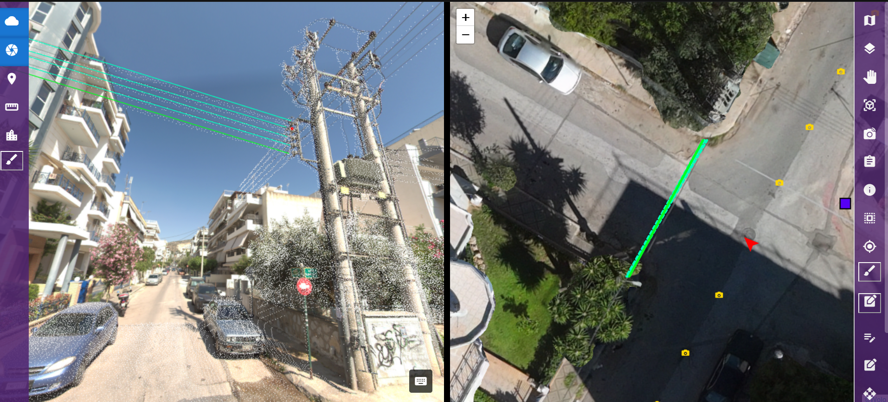
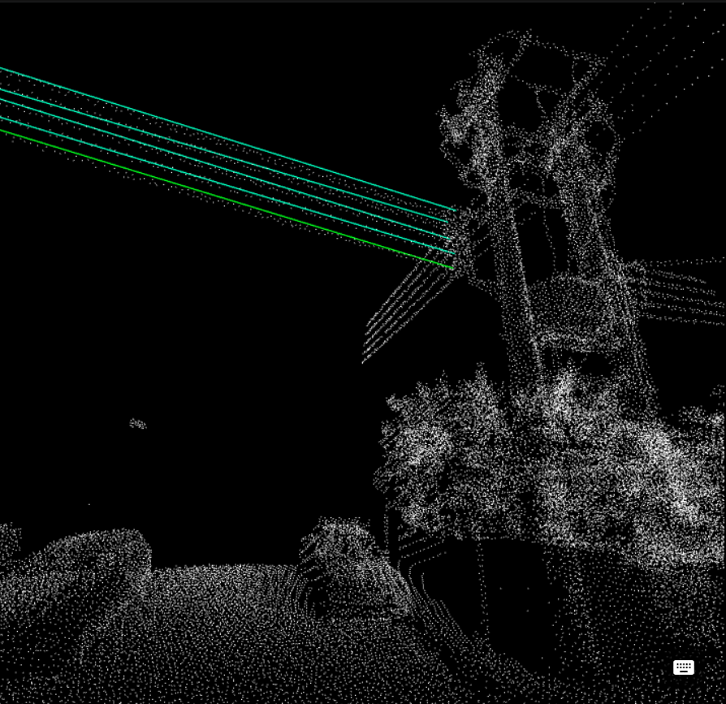
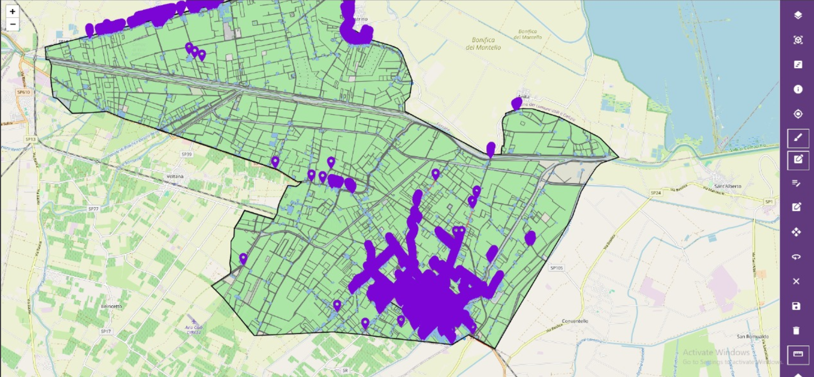
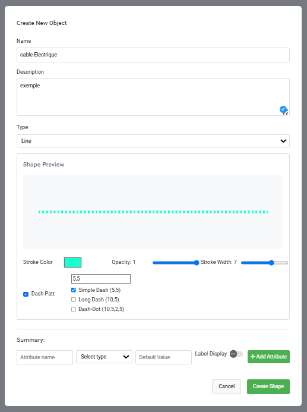
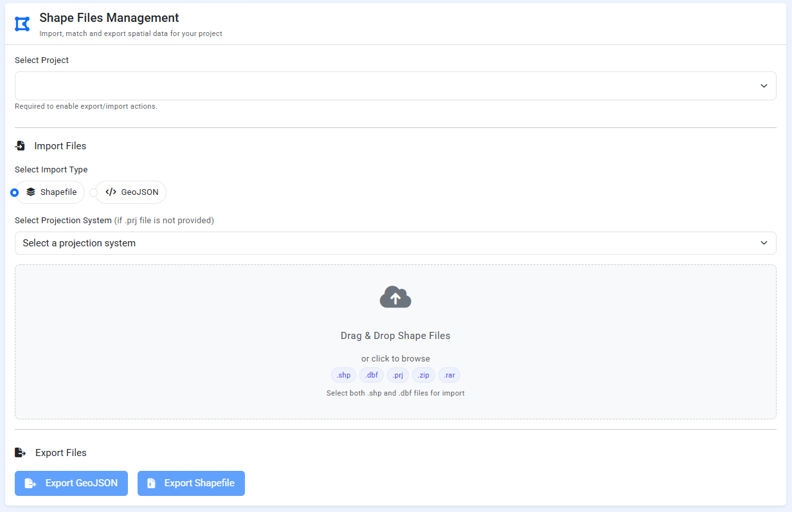
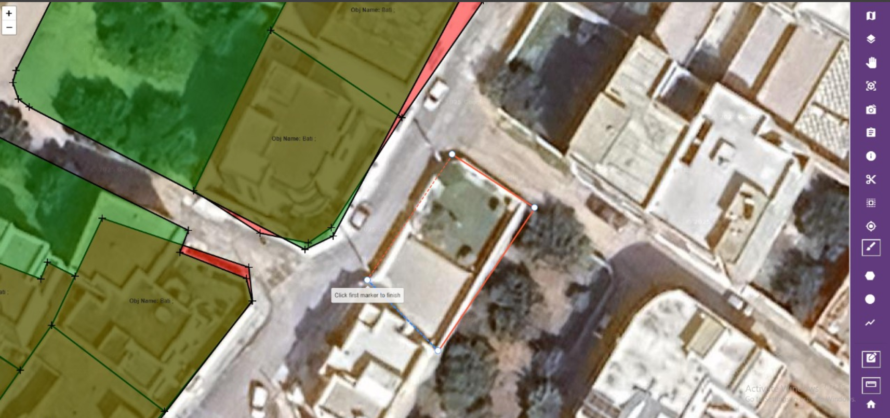
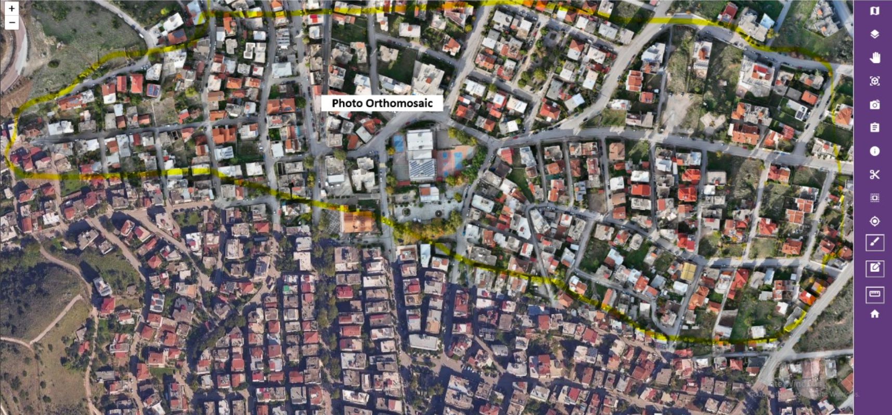

Smartown
Advanced 3D Cartography Platform

3D Visualization and Panoramas
Smartown allows the visualization of panoramas with 3D support for shapes and point clouds.

Cloud Point Visualization
Smartown provides visualization of point cloud data with 3D support for shapes and point clouds.

Large Project Visualization
Smartown provides visualization of large-scale cartography projects while maintaining optimal performance.

Shape Creation & Management
Smartown allows you to create and manage fully customizable shapes for your cartography projects.

Shapefile Import & Export
Smartown allows easy import and export of shapefiles, enabling smooth integration with other GIS tools.

Intuitive Shape Management
The application enables simple and efficient creation and management of new cartographic shapes.

Orthomosaic Import
The application supports importing orthomosaics to ensure better accuracy and high-quality results.